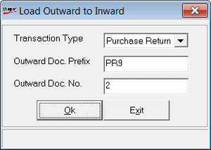

The Load Inward to Outward window is as shown.

Note: The process of loading outward doc to inward is known as cross-docking.
Transaction Type: Select the transaction type. The available transactions are Purchase Returns, Transfer out and Misc Issues.
Outward Doc. Prefix: Enter the prefix of the outwards document.
Outward Doc. No.: Enter the number of the outwards document.